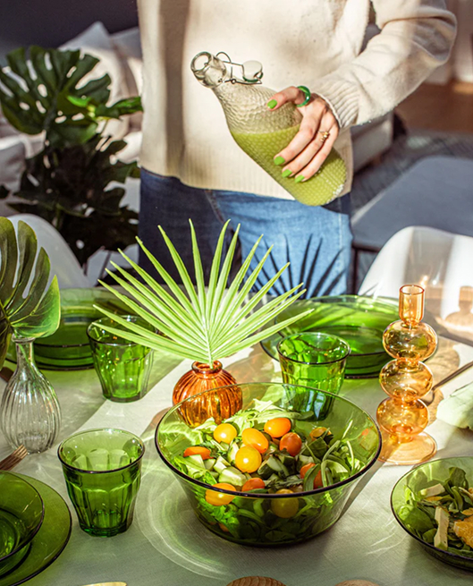
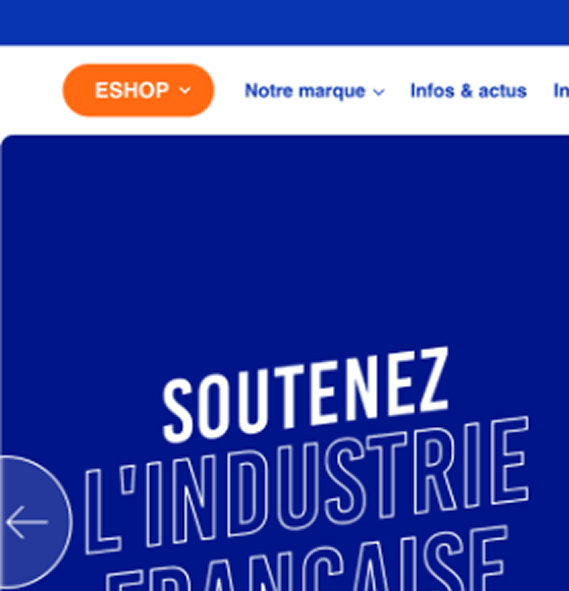
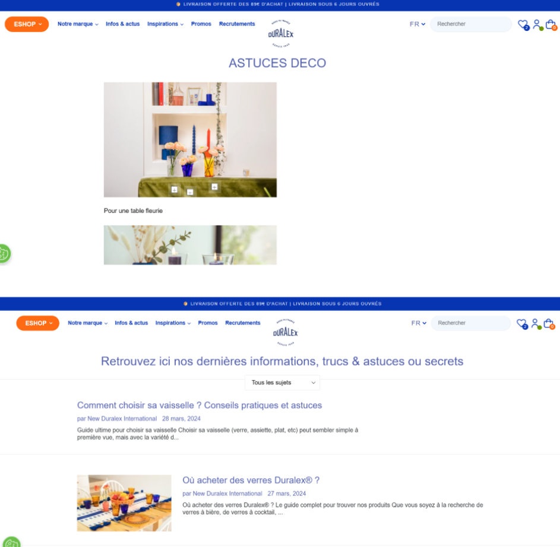
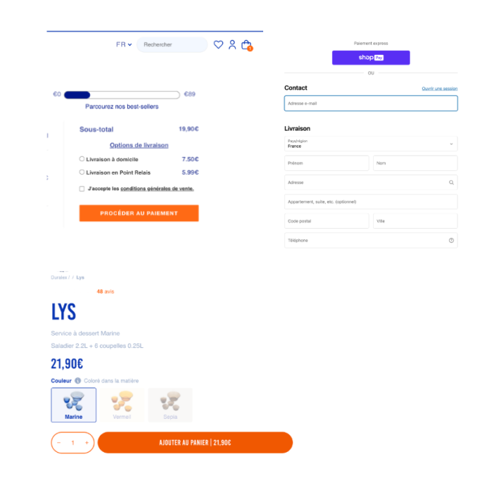

Duralex
Le défi
Après avoir échappé à la faillite et s'être transformé en Scop, Duralex est pleine croissance.
Au delà des marchés des collectivités et des professionnels, un des enjeux de la marque historique est de se repositionner pour devenir le leader e-commerce sur les segments vaisselles, verres & achats cadeaux de l'art de la table. Les points clés de duralex sont : l'accessibilité, le made in français et design iconique populaire.
Définir la nouvelle stratégie digitale & UX pour 2025-2030.
- Rôle: UX/UI Lead
- Durée: 1 semaine
- Outils: Figma
Process
Research
Analyse de l'existant
Recommandation
Proposition des solutions UX
Design
Prototypage interactif sur Figma
○ Analyse de l'existant
Notre compréhension du produit
Duralex est un E-commerce dédié aux professionnels notamment les collectivités telles que secteur de la restauration (HoReCa*), cantine scolaire qui propose des produits du quotidien robustes, pratiques et durables, qui allient sécurité, fonctionnalité et design intemporel.
*HoReCa : est un acronyme désignant le secteur d'activités de l'hôtellerie, de la restauration et des cafés.

Classement des fonctionnalités selon les dimensions
| Fonctionnalités existantes | Rech. | Conseil | Gestion | Promo. | Achat |
|---|---|---|---|---|---|
| Filtrer ma recherche | 🔵 | ||||
| Accéder aux best-sellers | 🔵 | 🔵 | |||
| Accéder à toutes les promotions | 🔵 | 🔵 | |||
| Découvrir la fiche produit | 🔵 | 🔵 | |||
| Créer un compte / Se connecter / Modifier | 🔵 | ||||
| Connaître les promos en cours | 🔵 | 🔵 | 🔵 | ||
| Découvrir la sélection / le blog | 🔵 | 🔵 | |||
| Ajouter un produit / Partager wishlist | 🔵 | 🔵 | |||
| Connaître ma jauge de livraison gratuite | 🔵 | 🔵 |
Dimension Recherche
Objectif: Faciliter le processus de recherche afin que l'utilisateur ait facilement accès à ce qu'il souhaite.
UX actuelle:
- ＋ L'expérience de recherche est flexible grâce a plusieurs points d'entrée.
- － Problème de wording, le terme 'ESHOP' est source de confusion.
- － Il manque une source d'inspiration.

Dimension Conseil
Objectif: Mettre en avant des conseils et astuces inspirantes, inspirer et optimiser le parcours.
UX actuelle:
- － La page " Actualités " souffre de déséquilibres visuels.
- － Les photos inspirantes ne renvoient pas vers des conseils.
- － La page " Astuces déco " présente un manque de contenu.

Dimension Achat
Objectif: Anticiper à moyen terme les futurs blocages.
UX actuelle:
- ＋ Expérience fluide avec des éléments motivants (jauge de livraison).
- ＋ La mémorisation des données.
- － Les boutons d'actions varient d'une page à l'autre créant de la confusion.

État des lieux
○ Recommandations UX
Notre avis
Pour devenir une marque de référence sur le marché de la verrerie, il est essentiel que Duralex adopte un nouveau positionnement stratégique visant à redorer et moderniser son image, renforcer son attractivité et se démarquer ainsi de ses concurrents.
La première étape consiste à repenser l'ensemble de la communication pour refléter les valeurs d'esthétisme, de durabilité et de responsabilité. Une mise en avant des engagements écologiques.
La seconde étape concerne l'expérience utilisateur : intégrer de nouvelles fonctionnalités interactives et optimiser la navigation.
Partis-pris
Il est important de clarifier les bénéfices utilisateurs de ce positionnement, qui sont :
1. Customisation
Un produit qui s'adapte aux besoins et style du client.
2. Inspiration
Permettre aux utilisateurs de découvrir des idées harmonieuses.
3. Informé
Structurer le contenu et modifier le wording.